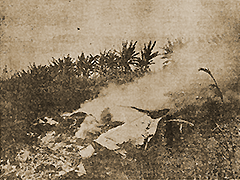

|
j
a v a s c r i p t |
September 5, 1944

B-24 Crash Site
A Tribune picture shows the smoking wreck of a B-24 from the September 1st raid. Another shows a sentry guarding a dead American crewmember with an improvised cross over the grave. Headline: "U.S. Flyers Show Utter Disregard for Filipino Lives" — Davao September 2: Today a camp at LASANG was heavily bombed, causing considerable casualties and destruction to non-military objectives, and causing deaths and injuries to many Filipino workers. In the MINTA area, the Filipinos who took refuge in COCONUT PLANTATIONS were strafed by American airmen. A group of trucks going to LASANG City was bombed. In both cases, considerable casualties resulted. In the raid yesterday, one of the planes flying at low altitude bombed a carreton loaded with kangkong and other farm products at Barrio MATINA.... The Filipino driver was killed outright, and the carabao ... was also killed. At SASA yesterday, a group of Filipino workers were bombed, resulting in many casualties. . . . . . . . . . . . . . . . . . . . . The Director of the local Bureau of Information of the Imperial Japanese Army ... announced the sad news of the bombing of this city and expressed sympathy of the Japanese for the Filipino nation for the indiscriminate American bombing, and pointed out to the Filipinos that the experience of Davao should be a lesson to them. 'Last night,' he said, 'Davao City was again awakened by the wailing of sirens.... Hardly had the last blast sounded when detonations of falling bombs shook the earth. That night, four houses saw death and desolation. Nine Filipinos and one Japanese woman died.' Citing tragic cases of these blind bombings, the Director ... gave those of Rosita Antoque, a 14-year old high school student, the 17-year old Valeriano Olanda, and Licerio Ordoneza, another young man, who were all victims of the raid. In another case, only two small boys, 10 and 12 years old, were left of a big family that was wiped out by a bomb. 'These two boys are now in the hospital,' he said. 'I am thinking of their despair and the emptiness the Americans have made them heirs to.... I wonder if you realize now that you really do not matter to the Americans as human beings with lives and laughter and tears. What are you to them? Only a group of brown people, their inferiors.' As one guy here quipped: "Nuts! So American bombs killed some 15 or 20; the Japs have caused thousands to die of starvation and many more thousands to descend to the level of human misery unknown to us before." The News confirmed that three Japanese freighters were sunk and nine others were damaged off Davao. Attacks on Davao airdromes met no opposition from the air. The raid was a light one. MacArthur said the Davao area was being "covered" by patrol bombers day-and-night. The Japanese, unwilling to accept air battles, have abandoned the three airfields. Where are these airfields? LASANG, SASA and MATINA — precisely the three points mentioned in the Tribune article. American fighters made their first appearance in the September 2nd raid. MacArthur said they even strafed the fields and DISPERSAL areas (page the coconut groves). Correspondent Van Atta said: Bad weather ... superb precision bombing — no finer job ever done before. The Japanese antiaircraft over Matina was good and got two B-24s. |
|
|
|
|